项目内容
Project1
在Mininet上搭建一个20个节点网络（拓扑给定），每个网络节点下挂一个主机；
使用Ryu连接Mininet中的交换机；
并将拓扑读出来进行可视化展示；
在Ryu上实现深度优先遍历算法，并找出任意两个主机间的最短路和最长路；
使用最长路来配置任意两个主机间的通信连接;
将配置通的业务在可视化平台上进行展示
项目分析
按照项目的要求，我们需要先在Mininet上搭建一个不少于20个节点的拓扑网络，然后在基于Ryu上编写一个能实现依照BFS和DFS算法（也就是用BFS和DFS找出两个节点之间的最短路和最长路）进行节点间路径查找及配置的控制器。最终将配置好的Mininet网络通过绘图模块进行可视化展示。
项目思路
拓扑网络搭建
由于这次项目的拓扑网络是助教给定的，我直接给出拓扑的代码并解读。
from mininet.net import Mininet
from mininet.node import Controller, RemoteController, OVSController
from mininet.node import CPULimitedHost, Host, Node
from mininet.node import OVSKernelSwitch, UserSwitch
from mininet.node import IVSSwitch
from mininet.cli import CLI
from mininet.log import setLogLevel, info
from mininet.link import TCLink, Intf
from subprocess import call
def myNetwork():
net = Mininet( topo=None,
build=False,
ipBase='10.0.0.0/8')
# 添加控制器并设置为RemoteController（也就是我们后面编写的Ryu控制器）
info( '*** Adding controller\n' )
c0=net.addController(name='c0',
controller=RemoteController,
protocol='tcp',
port=6633)
# 添加交换机并设置协议
info( '*** Add switches\n')
s9 = net.addSwitch('s9', cls=OVSKernelSwitch,protocols=['OpenFlow13'])
s4 = net.addSwitch('s4', cls=OVSKernelSwitch,protocols=['OpenFlow13'])
s11 = net.addSwitch('s11', cls=OVSKernelSwitch,protocols=['OpenFlow13'])
s6 = net.addSwitch('s6', cls=OVSKernelSwitch,protocols=['OpenFlow13'])
s13 = net.addSwitch('s13', cls=OVSKernelSwitch,protocols=['OpenFlow13'])
s1 = net.addSwitch('s1', cls=OVSKernelSwitch,protocols=['OpenFlow13'])
s2 = net.addSwitch('s2', cls=OVSKernelSwitch,protocols=['OpenFlow13'])
s10 = net.addSwitch('s10', cls=OVSKernelSwitch,protocols=['OpenFlow13'])
s7 = net.addSwitch('s7', cls=OVSKernelSwitch,protocols=['OpenFlow13'])
s8 = net.addSwitch('s8', cls=OVSKernelSwitch,protocols=['OpenFlow13'])
s3 = net.addSwitch('s3', cls=OVSKernelSwitch,protocols=['OpenFlow13'])
s5 = net.addSwitch('s5', cls=OVSKernelSwitch,protocols=['OpenFlow13'])
s12 = net.addSwitch('s12', cls=OVSKernelSwitch,protocols=['OpenFlow13'])
# 添加主机并设置ip地址和mac地址
info( '*** Add hosts\n')
h1 = net.addHost('h1', cls=Host, ip='10.0.0.1', defaultRoute=None,mac='00:00:00:00:00:01')
h13 = net.addHost('h13', cls=Host, ip='10.0.0.13', defaultRoute=None,mac='00:00:00:00:00:13')
h2 = net.addHost('h2', cls=Host, ip='10.0.0.2', defaultRoute=None,mac='00:00:00:00:00:02')
h4 = net.addHost('h4', cls=Host, ip='10.0.0.4', defaultRoute=None,mac='00:00:00:00:00:04')
h6 = net.addHost('h6', cls=Host, ip='10.0.0.6', defaultRoute=None,mac='00:00:00:00:00:06')
h8 = net.addHost('h8', cls=Host, ip='10.0.0.8', defaultRoute=None,mac='00:00:00:00:00:08')
h11 = net.addHost('h11', cls=Host, ip='10.0.0.11', defaultRoute=None,mac='00:00:00:00:00:11')
h5 = net.addHost('h5', cls=Host, ip='10.0.0.5', defaultRoute=None,mac='00:00:00:00:00:05')
h7 = net.addHost('h7', cls=Host, ip='10.0.0.7', defaultRoute=None,mac='00:00:00:00:00:07')
h10 = net.addHost('h10', cls=Host, ip='10.0.0.10', defaultRoute=None,mac='00:00:00:00:00:10')
h12 = net.addHost('h12', cls=Host, ip='10.0.0.12', defaultRoute=None,mac='00:00:00:00:00:12')
h9 = net.addHost('h9', cls=Host, ip='10.0.0.9', defaultRoute=None,mac='00:00:00:00:00:09')
h3 = net.addHost('h3', cls=Host, ip='10.0.0.3', defaultRoute=None,mac='00:00:00:00:00:03')
# 添加交换机与主机之间的连接 也就是我们前面要求的每个节点下面挂一个主机 以s1和h1为例 s1交换机下面挂h1主机
info( '*** Add links\n')
net.addLink(s1, h1)
net.addLink(s3, h3)
net.addLink(h4, s4)
net.addLink(h5, s5)
net.addLink(h7, s7)
net.addLink(h9, s9)
net.addLink(h10, s10)
net.addLink(s12, h12)
net.addLink(h11, s11)
net.addLink(s13, h13)
net.addLink(s8, h8)
net.addLink(s6, h6)
net.addLink(s2, h2)
# 这里开始进行交换机之间的连接 实现拓扑网络
net.addLink(s1, s3)
net.addLink(s3, s2)
net.addLink(s2, s6)
net.addLink(s3, s6)
net.addLink(s3, s4)
net.addLink(s3, s7)
net.addLink(s7, s5)
net.addLink(s7, s10)
net.addLink(s6, s8)
net.addLink(s8, s13)
net.addLink(s8, s9)
net.addLink(s9, s10)
net.addLink(s10, s12)
net.addLink(s6, s9)
net.addLink(s10, s11)
net.addLink(s9, s11)
net.addLink(s11, s13)
# 连接网络并启动控制器
info( '*** Starting network\n')
net.build()
info( '*** Starting controllers\n')
for controller in net.controllers:
controller.start()
# 启动交换机
info( '*** Starting switches\n')
net.get('s9').start([c0])
net.get('s4').start([c0])
net.get('s11').start([c0])
net.get('s6').start([c0])
net.get('s13').start([c0])
net.get('s1').start([c0])
net.get('s2').start([c0])
net.get('s10').start([c0])
net.get('s7').start([c0])
net.get('s8').start([c0])
net.get('s3').start([c0])
net.get('s5').start([c0])
net.get('s12').start([c0])
info( '*** Post configure switches and hosts\n')
CLI(net)
net.stop()
if __name__ == '__main__':
setLogLevel( 'info' )
myNetwork()Ryu控制器编写
具体的代码讲解参见Project 1 代码讲解，这里只给出在Ryu控制器实现DFS和BFS的算法思路。
在本项目中，编写了一个含有查找路径算法的topo类及控制Mininet上给定的拓扑结构网络搭建的控制类的ryu-app对网络拓扑进行控制并寻找和设置路径，最终通过networkx对该拓扑结构进行可视化处理。
在查找路径算法部分，我们使用了DFS算法遍历了两个主机之间的所有路径并找出最长路和最短路，同时使用BFS算法找出最短路进行对比。
DFS算法
思路：
1、 定义sign字典记录交换机是否被访问过，path和allpaths分别存储单条路径和所有路径。(sign字典key对应的value为0表示未访问，1表示已访问)
2、 将所有交换机sign字典中的值初始化为0，将出发的交换机加入路径中并标记为已访问。
3、 选取路径中最后一个交换机，遍历所有的交换机，如果存在交换机与被选取的交换机有连接边且没有被访问过，将标记该交换机已访问并加入路径path中。
4、 重复步骤3直到路径的最后一个交换机是目的交换机，将path加入allpaths。
5、 回溯将路径最后一个交换机移出路径并标记为未访问，寻找下一个符合有连接边且没有被访问过的交换机。
6、 重复3、4、5直到找到所有路径。
7、 遍历所有路径便可以找出最长路和最短路。(部分代码下面没有给出)
# 用 DFS 找到两个交换机之间的所有路径
def findAllpaths(self, src_sw, dst_sw, sign, path, allpaths):
if src_sw == dst_sw: # 如果src_sw==dst_sw，说明已经找到了目的交换机
allpaths.append(path.copy()) # 把找到的路径加入allpaths
else:
for sw in self.switches: # 如果还没找到目的交换机 遍历所有的交换机
# 找出src_sw中的没被访问的邻接交换机
if (sw in (self.get_Adjdict(src_sw)).keys()) and (sign[sw] == 0):
sign[sw] = 1 # 标记访问
path.append(sw) # 将交换机加入路径
self.findAllpaths(sw, dst_sw, sign, path, allpaths) # 递归调用该函数查找到目的交换机的路径
path.remove(sw) # 将交换机移除路径 找下一条路径
sign[sw] = 0 # 将交换机标记为未访问 最后两句的目的是找出所有路径BFS算法
思路：
1、 定义sign字典记录交换机是否被访问过以及存储该交换机被遍历时的路径的上一个交换机，queue_list用于存放最短路径。
(sign字典key对应的value为0表示未访问，-1表示第一个交换机，其他值为该交换机被遍历时路径的上一个交换机)
(queue_list可视为模仿队列的列表，从尾部弹出数据，头部加入数据，先进先出)
2、 将出发的交换机加入queue_list中并将它的sign中对应的Value赋值为-1。
3、 弹出路径最后一个交换机sw，遍历与交换机连接的所有边，找出所有与sw连接的没有被访问过的交换机，将这些交换机在sign对应的value赋值为sw并依次加入queue_list的头部。
4、 重复步骤3直到弹出的最后一个交换机是目的交换机，结束循环。
5、 此时通过sign字典递归寻找每个交换机对应的前一个通过的交换机直到第一个交换机便可以找出交换机从出发到目的地的最短路径。(记录路径的BFS算法)
# 用BFS找到最短路径
def findSpath(self, src_sw, dst_sw):
# sign用于记录交换机是否被访问过以及存储该交换机被遍历时的上一个交换机
sign = {}
# 将所有交换机的sign对应的值初始化为0 src_sw赋值为-1表示前面路径的起点
for sw in self.switches:
sign[sw] = 0
sign[src_sw] = -1
# queue_list用于存放最短路径 用列表模仿队列
queue_list = [src_sw]
# BFS寻找最短路
while queue_list:
# 弹出列表中最后的交换机
sw = queue_list.pop()
# 如果找到路径 直接输出路径
if sw == dst_sw:
print("the shortest path :", end=" ")
self.printsPath(sw, sign)
print("end")
return
# 遍历所有的连接边
for u in self.get_Adjdict(sw).keys():
if sign[u] == 0:
sign[u] = sw
queue_list.insert(0, u)
def printsPath(self, sw, sign):
#如果sign[sw]为1 说明已经是第一个交换机了
if sign[sw] != -1:
self.printsPath(sign[sw], sign)
print(f"{sw}-", end=' ') 项目展示
在project1中打开已建立的拓扑topo.py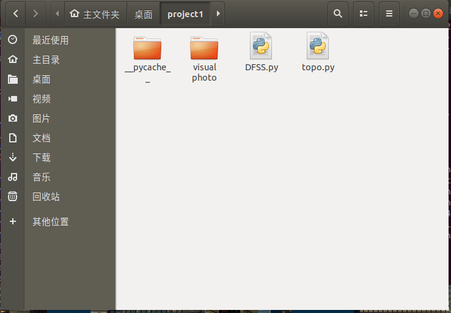
分别调用net、nodes、links、dump对于拓扑网络查看链路信息、可用节点信息、链路是否能正常工作和可用节点信息。
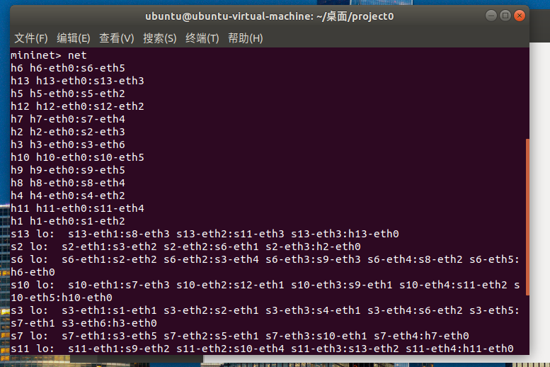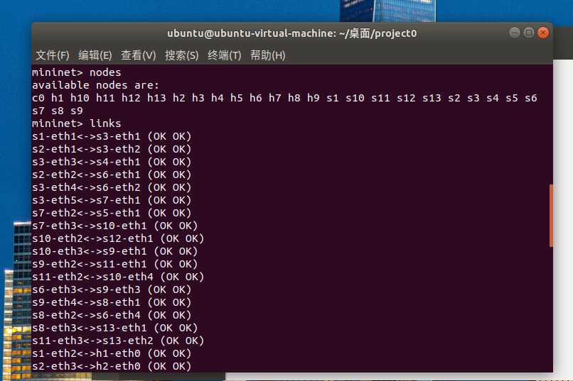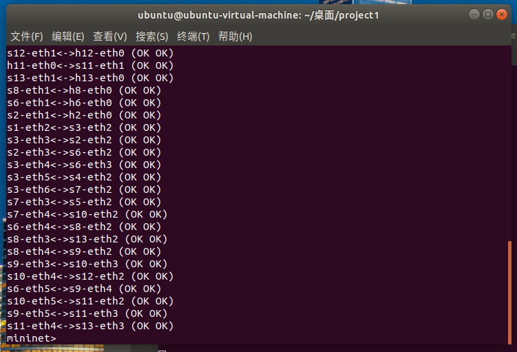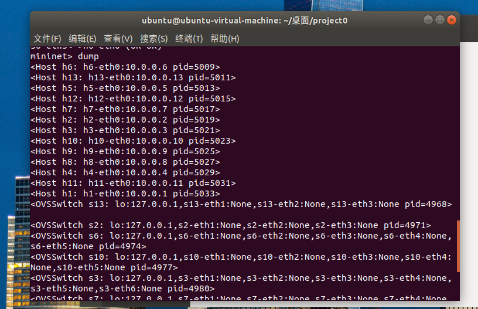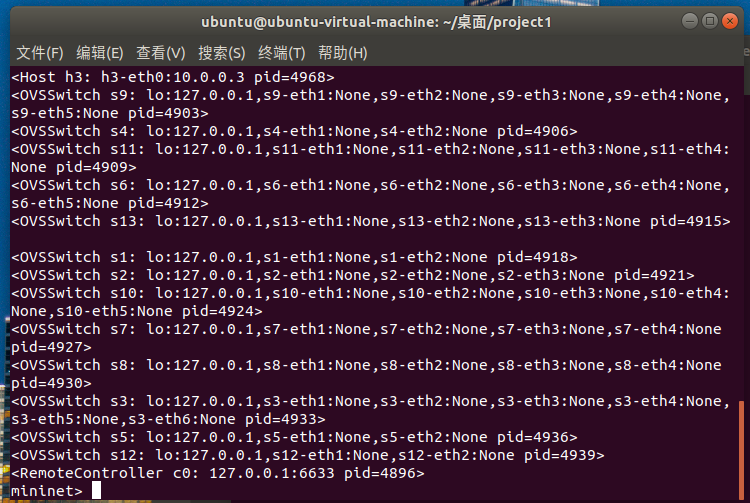
在project1中再打开一个终端，输入ryu-manager DFSS.py –observe-links运行，日志信息更新，发现了34条链路。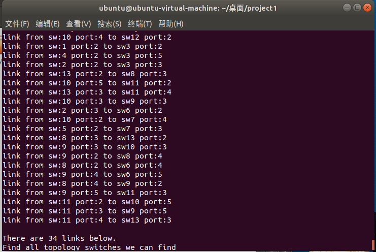
测试h2 ping h7
输入 h2 ping h7 -c4测试4次其连通性。结果如下
(1) 丢包率为0，连接良好。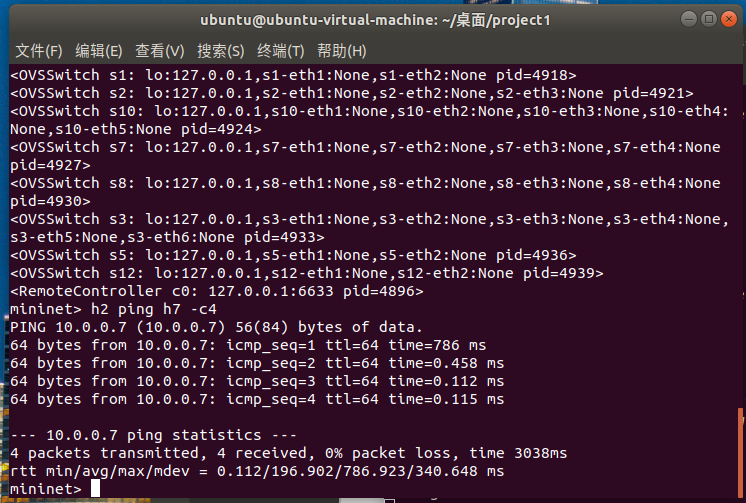（2）新建了一个文件夹visual photo用于存储图片，并展示出了两种情况下给定路径的topo图
 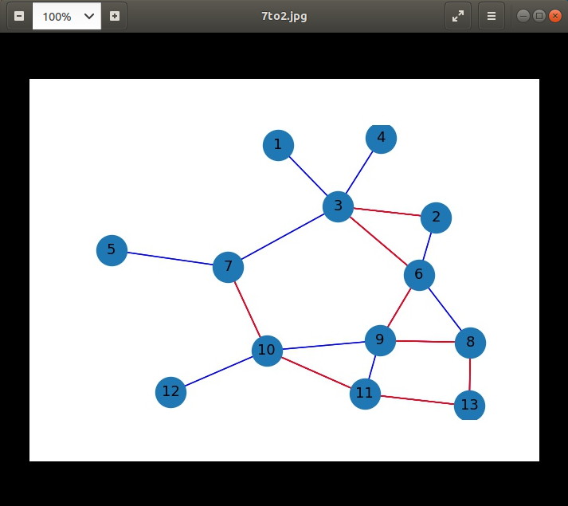
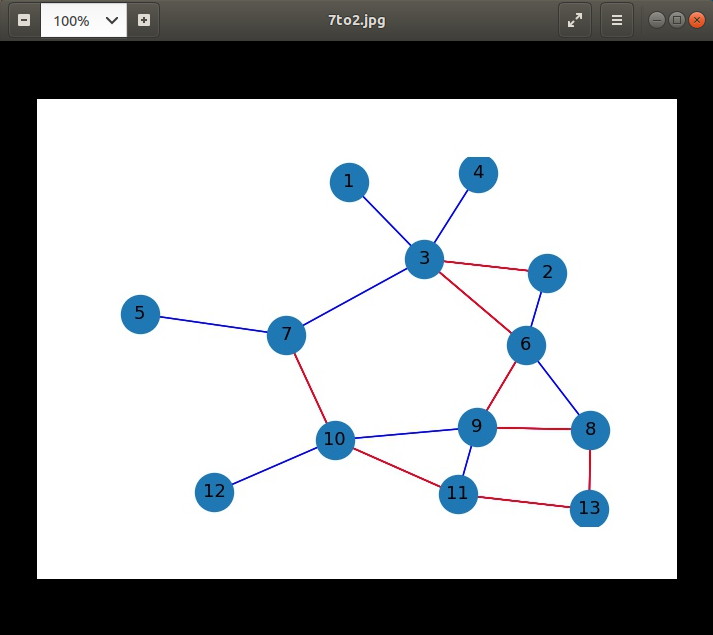（3)计算出了最长路和最短路，并按照最长路配置了路由。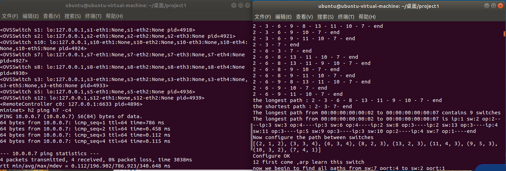
测试pingall，连接所有主机。
结果：生成了所有路径的topo图，计算出了任意两个路径间的最短最长路，并按最长路配置了任意两个主机间的通信连接。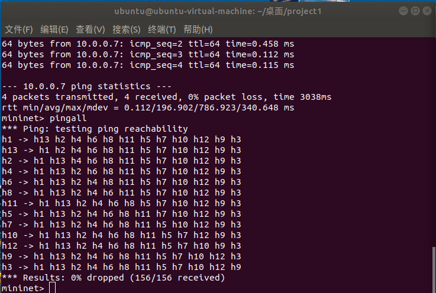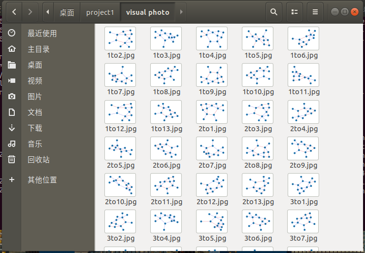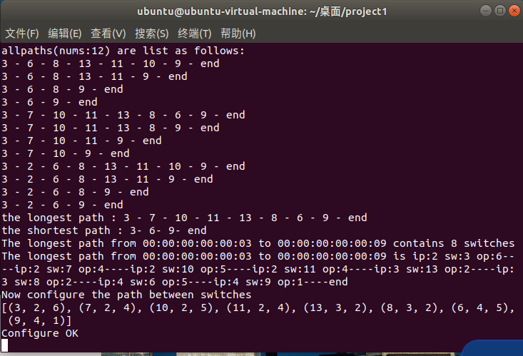
- 本文链接：http://mlinku.top/2021/10/07/Project%201%20%E5%9B%BE%E7%9A%84%E9%81%8D%E5%8E%86/
- 版权声明：本博客所有文章除特别声明外，均默认采用 许可协议。